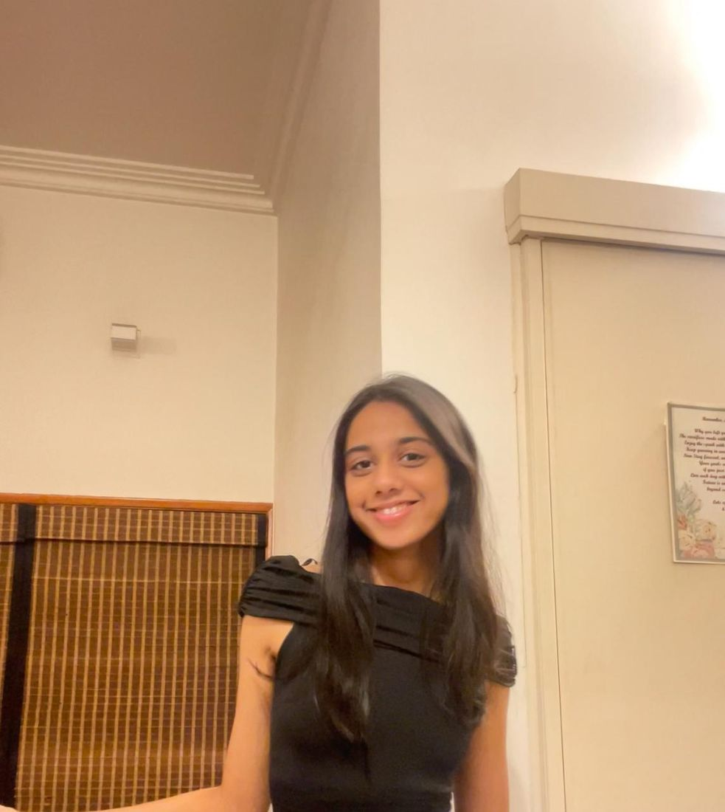
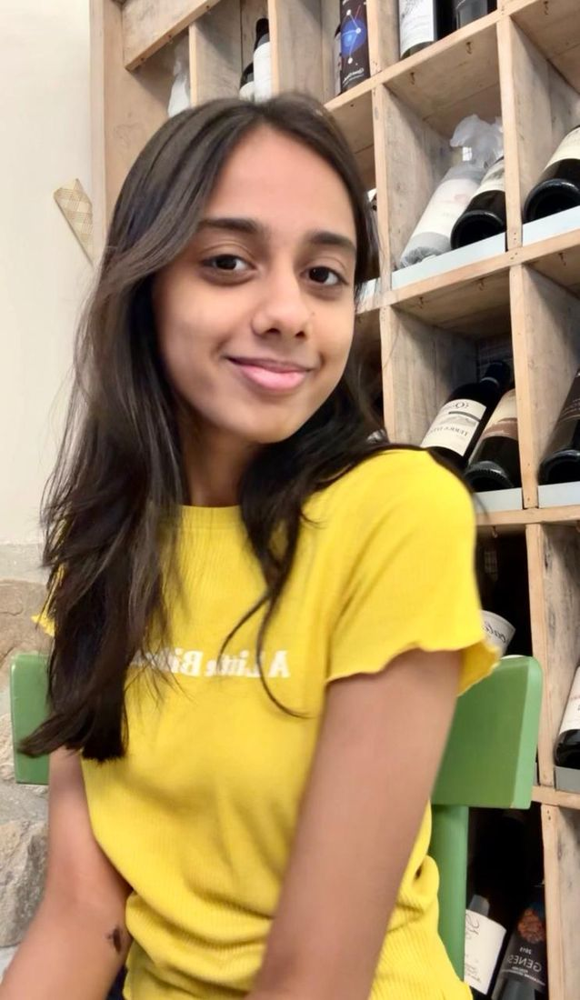
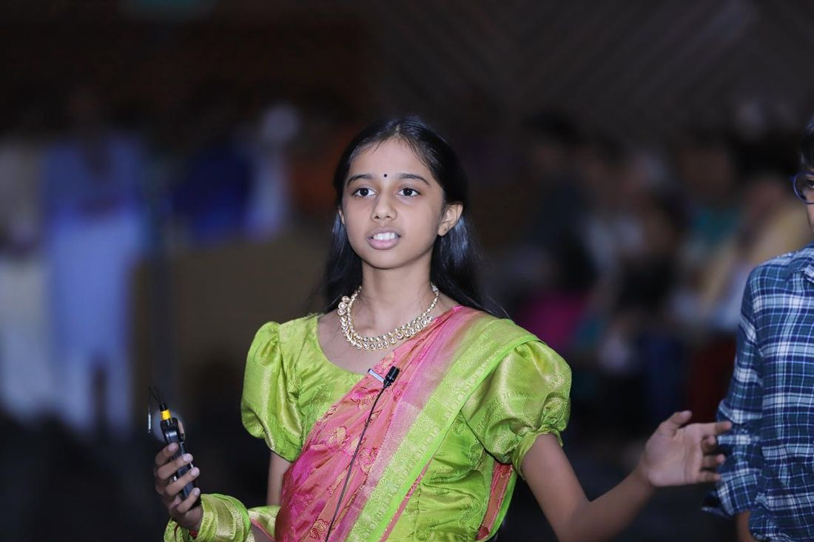
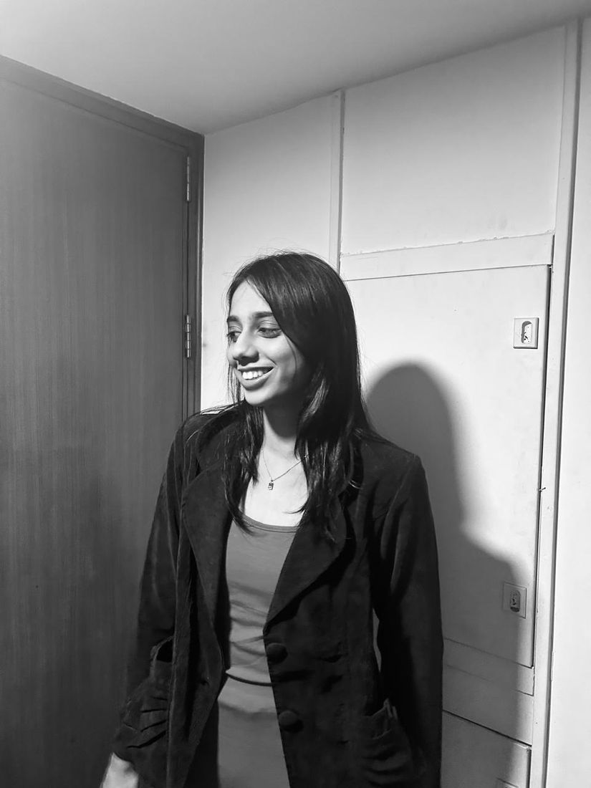
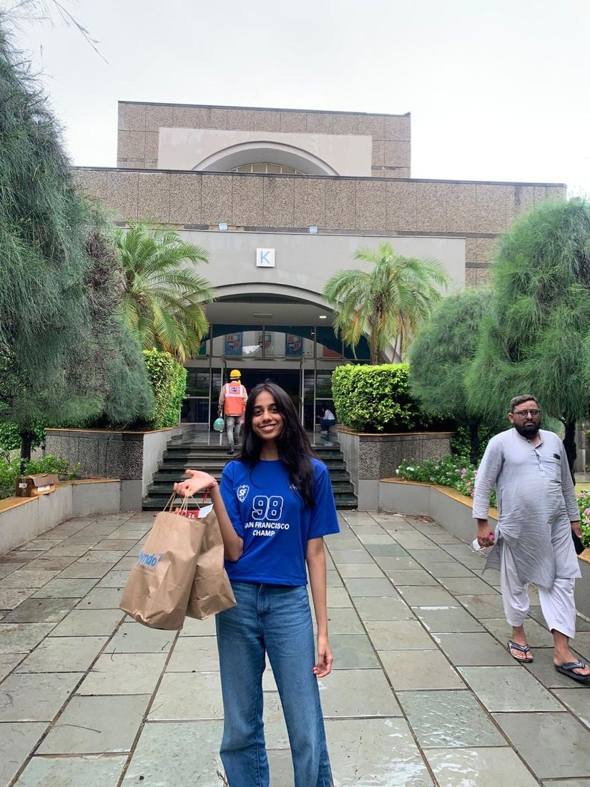
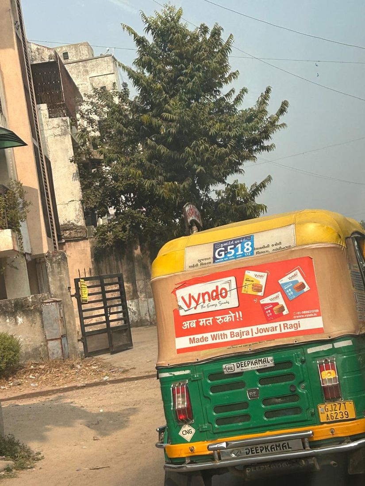
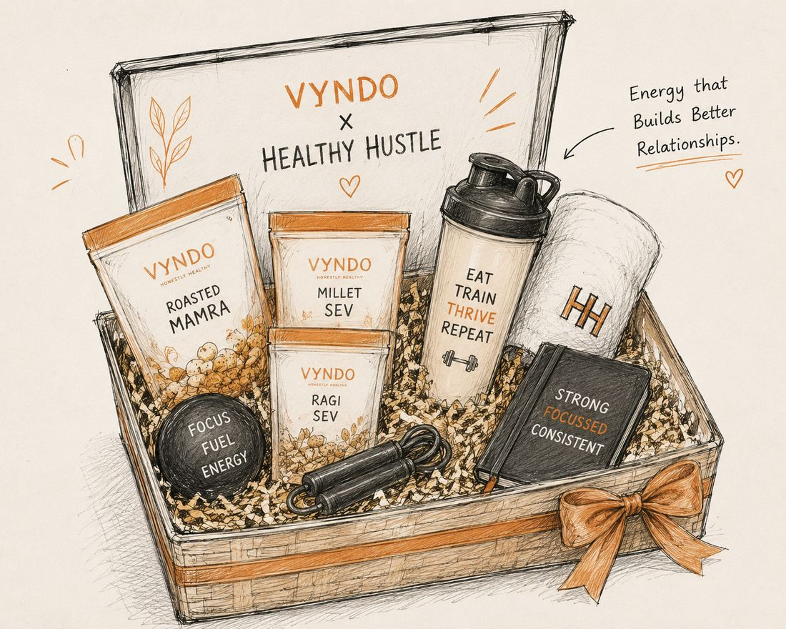

Every project teaches you twice—once while building it, and again when explaining it. This portfolio is my attempt at doing both.


Born into a legacy of innovation, I'm a business student at Ahmedabad University, blending tradition with ambition. A lifelong topper, trained Bharatnatyam dancer, and social impact enthusiast — I bring discipline, creativity, and heart to everything I do. Let's build something meaningful together.

Sometimes it's true! Maturity does not need a certain age number... Here, Mira Shah, 13, shares eye-opening experiences and very few practical tips to put into action.
Click here ✦
My first internship was at Nutrirasoi Foods Pvt. Ltd. Under which, I helped build their brand 'Vyndo' — a healthy millet-based snack startup. I first joined as a marketing intern, then for a month as a sales intern, and finally concluded my third month as a business development intern.

My first project was redesigning the rickshaw marketing campaign — something that didn't work the first time. Looking at the old posters, one thing kept bothering me: we were loudly promoting "₹10 snacks." I had a feeling that might actually hurt the perception of a healthy snack.
So I went down a small rabbit hole — consumer surveys, research on food marketing and consumer behavior, two online food-branding courses — trying to understand how people actually judge quality when buying snacks. That exploration led us to tweak the price point and shift the focus away from price and toward the product's value.
The outcome was small but special to me: the campaign went from 0 calls to 12 calls. Small, but my first real win.
To know more about it, and read my whole research — click the link for The 10rs. Dilemma below.

During my time on the sales team, my second project was designing the blueprint for Vyndo hampers we were planning to launch. From creating presentations and promotional posters to deciding the product mix inside the hampers, I worked on shaping the entire concept — and eventually closed our first hampers client: the full chain of Healthy Hustle gyms across Ahmedabad.

One project that particularly changed the way I look at consumer brands was conducting a 40-store field study across Ahmedabad to understand how Vyndo actually existed inside real shops. I visited stores to observe everything from shelf placement and packaging condition to how distributors introduced the product to customers. The study eventually led to improvements in packaging durability, expiry labeling, Gujarati-language promotions, and clearer overall brand positioning.